Background
During Modern Warfare II (MWII), I spent the majority of my time in Search and Destroy attempting to hit cross-map throwing knives. After I hit Embassy, the last 6v6 map I needed, I had amassed 91 cross-maps in total. After omitting Shipment, I tried to pull out a few interesting details to share with the community. This dataset will also be available on GitHub if anyone wants to use it in the future. Some quick facts off the top:
I played a total of 562 games of Search and Destroy.
The number of matches on each map ranged from 4-62 with Vondel and Embassy being the lowest and highest, respectively.
The most challenging map was Embassy as I only recorded one cross-map in 62 games.
The map with the highest amount of cross-maps (15) was Zarqwa Hydroelectric.
Analysis
I had a general sense of which maps I hit the most and which ones proved difficult as I progressed, but getting a bird’s eye view of the data illuminates several interesting details (Figure 1). For instance, more than half the maps (n = 14) were only hit once or twice. I’ve attributed this to several factors:
Map difficulty — both spawns on several maps (e.g., Strike, Museum) are incredibly challenging and require some creativity and lots of luck.
Completionist — after going dry for many months on some of these maps, I just took a single kill and moved on.
Seasonal releases — some maps (e.g., La Casa) are released much later and naturally get less reps than the base maps. This can also compound with #1, #2, or both (e.g., Himmelmatt).
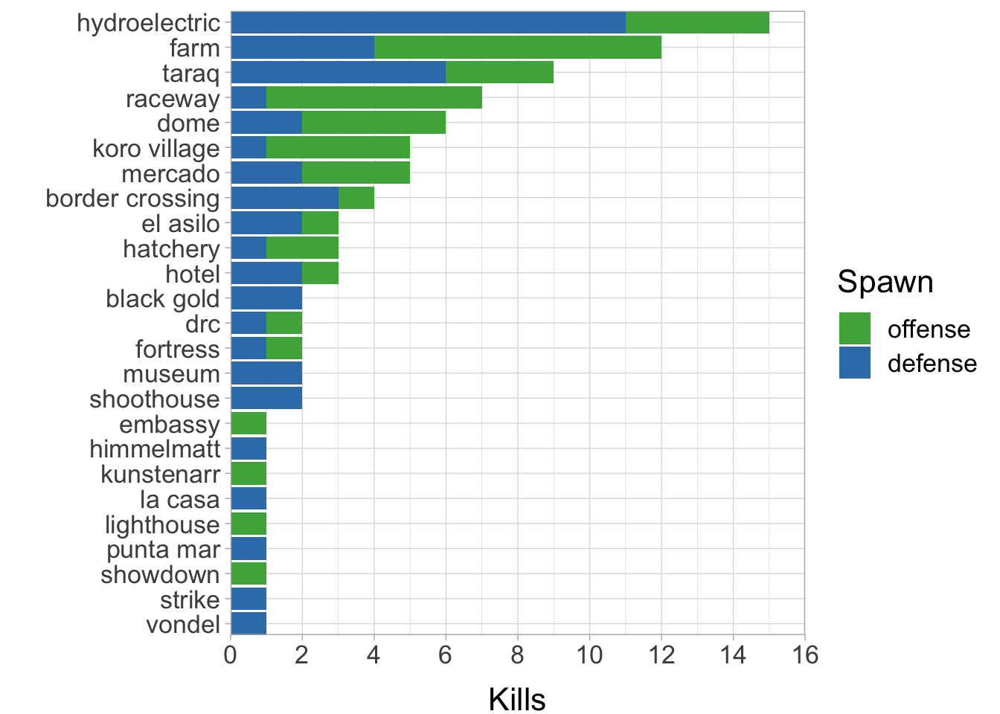
Another interesting observation was that five maps — Hydroelectric, Farm, Taraq, Raceway, and Dome — were responsible for 54% of my kills. Thinking back to the aforementioned factors, it is clear that Farm and Dome have relatively low degrees of difficulty as: 1) throwing knives are viable from both spawns; 2) distances are short; and 3) strong arm can be used to shoot gaps at low angles giving enemies less time to react. Conversely, the other three maps are more intriguing, largely because there may be a tendency to favour one spawn over the other (Figure 1). Let’s begin examining why it might be easier to hit cross-maps from the offense side of Raceway, and the defensive side of Taraq and Hydroelectric.
Case studies
1. Crown Raceway — the most obvious example
Crown Raceway has a relatively large discrepancy in spawn safety, with defense holding the distinct advantage. The left side of the tall, central building naturally protects players until they want to run up the stairs to mid-street — the most logical area for hitting cross-maps from offense (Figure 2). I hit several here which I’d consider fairly lucky. It is a relatively high traffic area; however, the variability in the throw combined with a) having to clear the concrete barrier; b) hitting a narrow kill zone; and c) underutilisation of the upper platform, which knives tend to bounce up on, make this more challenging than it looks (Figure 3). Note that hitting AFK players directly at spawn is also possible, but I’d argue it requires more luck.
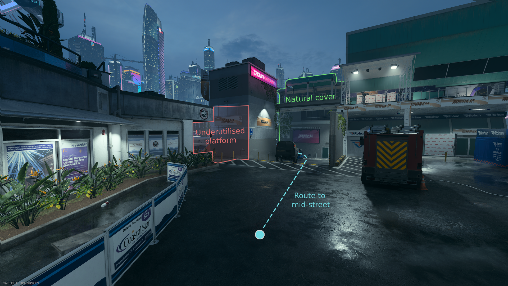
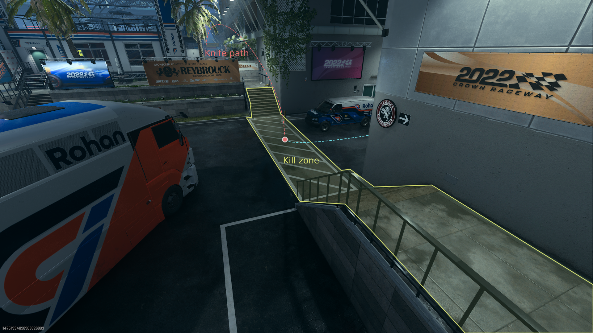
Let’s take a look at the other side. At first glance, the offense spawn looks quite safe; however, upon further inspection, I believe it is actually one of the more dangerous spawns in the game. The bomb entices players to run middle, which has a long runway and no barriers (Figure 4). This combined with a relatively consistent sprint-throw from the other side — that almost always clears the back end of the central building — is a recipe for disaster. A wide kill zone, which reduces the need for precision and timing, bouncing, and players running near-parallel to the knife path leaves everyone exposed, even those who are AFK.
Conclusion: my data suggests that the offense cross-map is easier; however, I’d argue that defense has the better setup.
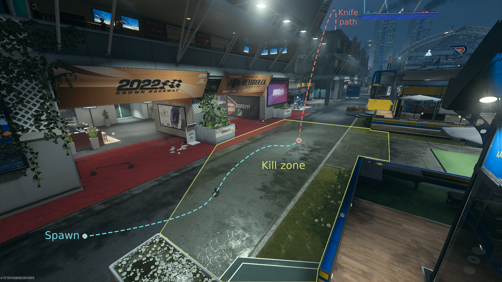
2. Taraq — an interesting case of design
Taraq being in my top five maps was somewhat surprising given its large size and asymmetric layout. Let’s start with the throws from offense because Infinity Ward did not give us any favours here. The large blue building in front of the defensive spawn forces players left towards B, which is more open, or right through a small corridor towards A (Figure 5). Unfortunately, the strategic position of the large central tower makes hitting the B route a near-impossible task (one I never attempted). That leaves trying to perfect the A throw — a sprint-jump toss into a vague grey sky that has to a) get over the balcony; or b) be left of the balcony and miss the pillar, which makes aim and timing absolutely crucial (Figure 6). Given these factors, I’d chalk the three I hit from this spawn up to luck, mostly. They are easily some of my favourite kills since so much has to go right (where is theatre mode when you need it).
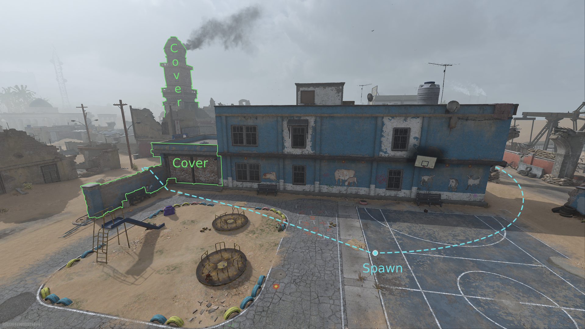
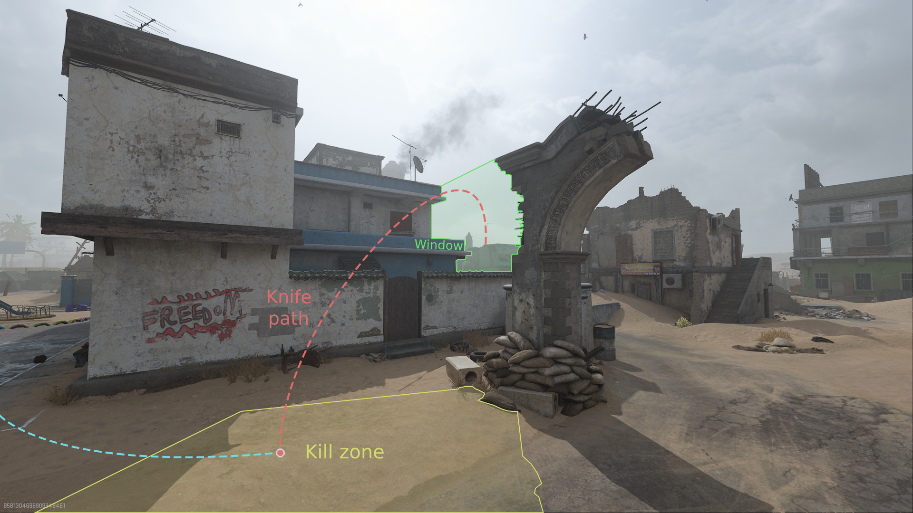
Although the defensive throw is pretty blind (due to blue), the offense spawn is more forgiving and does us a subtle, but key favour. The characters tend to spawn in looking more left (towards A), which perhaps leads to more A rushes; it may also have no effect on player decision-making (Figure 7). Regardless, the path to A is really the only viable cross-map option (as the B rush is well guarded) — lucky us. The area in front of spawn is quite open and the perpendicular runway offers lots of lead time if you can fly the retaining wall and avoid the corner building on the right (Figure 8). AFK players are also in play and a consistent point and release throw with strong arm makes this easier than expected.
Conclusion: I’ll take my chances with the defensive throw over a rare — albeit sublime — offense kill everytime.
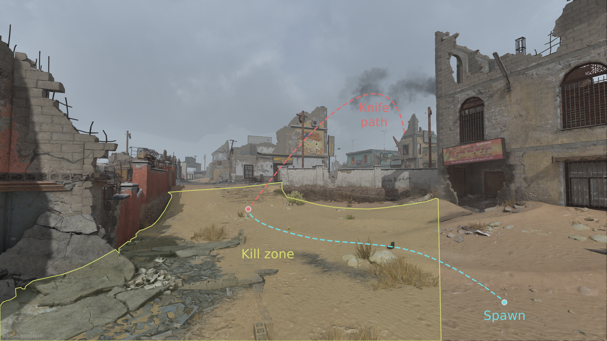
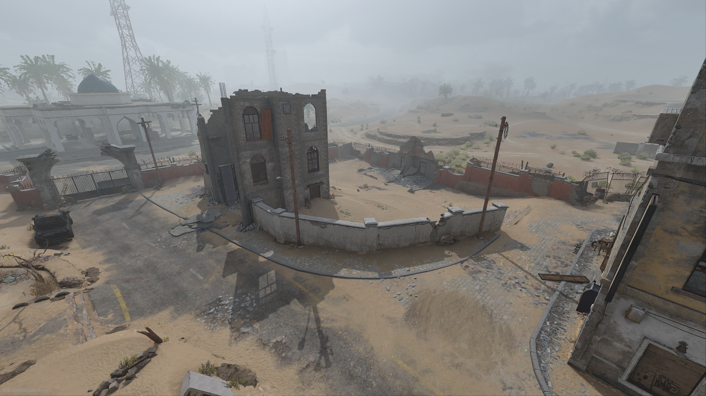
3. Zarqwa Hydroelectric — the most dangerous spawn in the game?
Zarqwa Hydroelectric is simply a cross-mapping paradise; however, there are some key factors as to why kills on offense seem to be harder to come by than its counterpart. Looking at the offense knife kill zone, the long runway to mid is relatively good from a cross-map perspective, but the players are protected by the generator building and its electric towers and are actually at a slightly lower elevation due to the carved out path on the right (Figure 9). Moreover, situated right in front of this path are various liquid containers and a power pole, which may play a sneaky role in reducing success. I figure a few lives were saved due to deflections/bounces off of these surfaces. Ultimately, knives have to cross the map, clear the building, and get down fast which allows many players to be safe by that time (if they’re quick off the draw at round start).
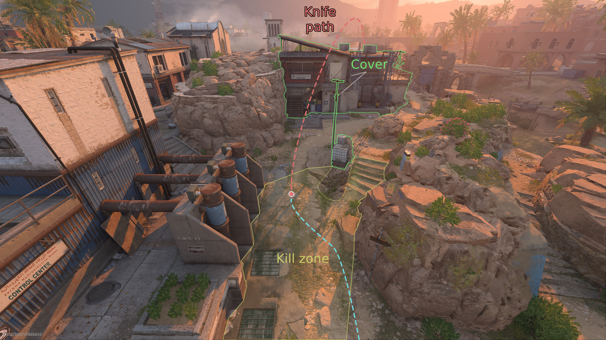
Conversely, tossing knives from defense is a dream setup (Figure 10). Player spawns in the kill zone? Check. Point and release strong arm throw? Check. Long, straight runway with no barriers and bounce opportunities? Check. Perfect bomb placement that entices players to funnel down the middle lane? Check. After a while, I expected to hit one from this side every game — it is the textbook example of what to look for when cross-mapping. Although this is a small sample size, offense on Zarqwa Hydroelectric may very well be the most dangerous Search and Destroy spawn in the game.
Conclusion: defense everytime.
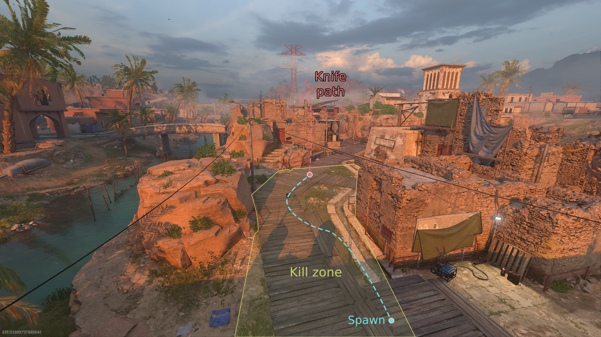
Annual patterns
Lastly, I thought it was interesting to look at the temporal aspect of the data — when did these kills happen over the course of the year? Looking at Figure 11, it’s pretty evident that my cross-maps occurred at three distinct times:
Release — excited to play the game and find spots on new maps, etc.
March to April 2023 — likely returned to check out a new season and was clearly consumed with knocking out cross-maps.
Around the release of the next Call of Duty — had to grind out the remaining maps before I moved on to the next game.
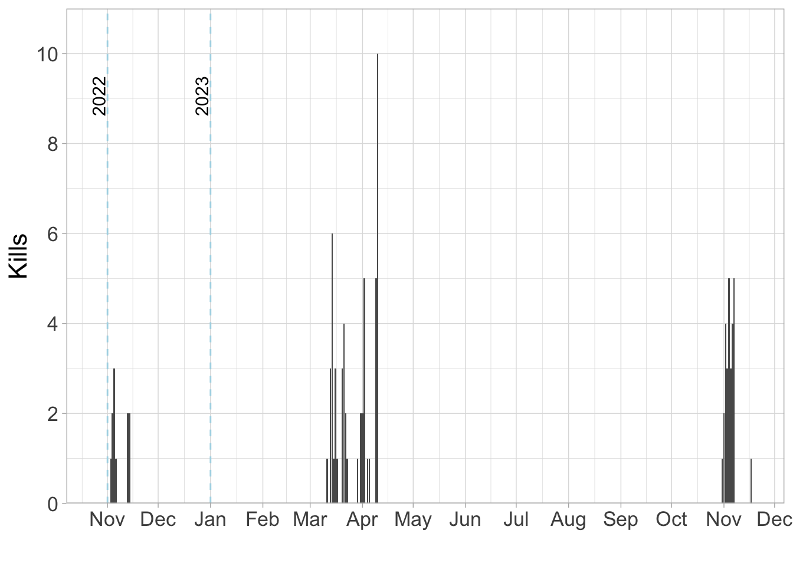
Interestingly, my data follows the ‘typical’ Call of Duty player cycle pretty well, which makes me laugh — I guess it is a thing after all. I hope you enjoyed this and maybe even learned something new about the game.
Until next time,
MGW